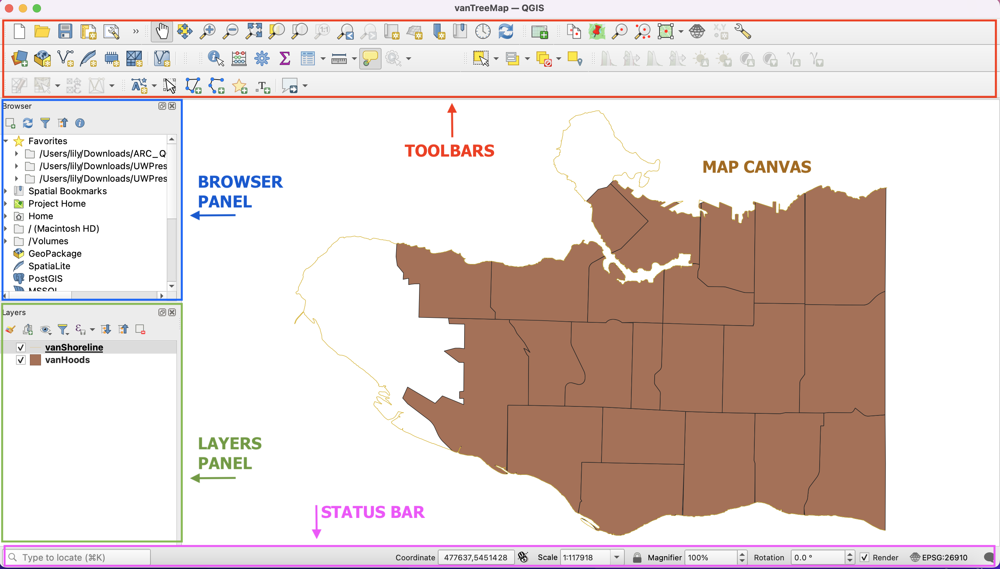

Toolbars - Toolbars are where you will find the most useful geoprocessing, editing, navigation, and other tools. You can customize this area of your GUI to fit your needs.
Browser and Layers Panel - The browser panel lets you easily navigate your file system for data and project files. Your layers panel displays your project’s data layers and provides access to configuration settings.
Status Bar - The status bar displays current information about the map canvas, and allows you to make adjustments in the map’s scale and rotation.
Map Canvas or Map View - Call it either one. This is where the map is displayed as layers are loaded. You can zoom/pan the map canvas as well as select features and other operations.